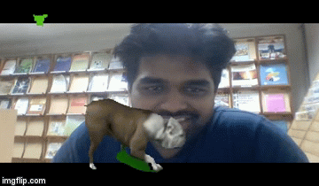

Hi there.. this is my personal page. I work as data scientist at techology centre of DBS Bank in Hyderabad India. I am passionate about data science, computer vision, NLP and IoT techn. I consider myself as ardant Python lover.
Acedemically, I have completed master's signal processing (thesis: Image fusion) from EE Dept., IIT BOMBAY. Currently I am also pursuing for part time PGSSP program at IIIT Hyderabad. Look at my recent assignment in computer vision course where green screen effect was used to create a composite video. This was special for me as it was done in C++ by compiling OpenCV from sources.
Below are some of interesting projects: